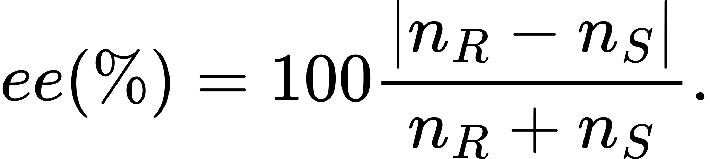
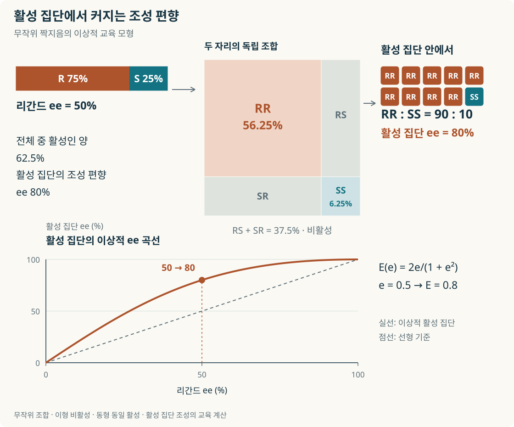
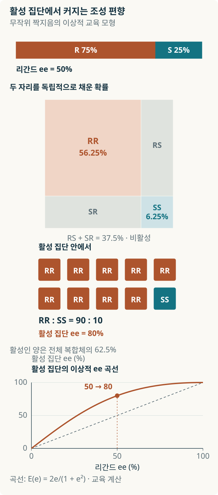
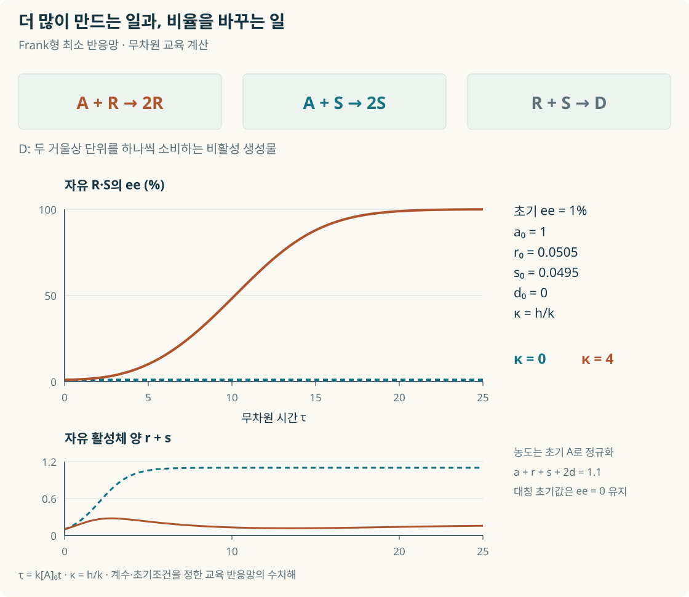
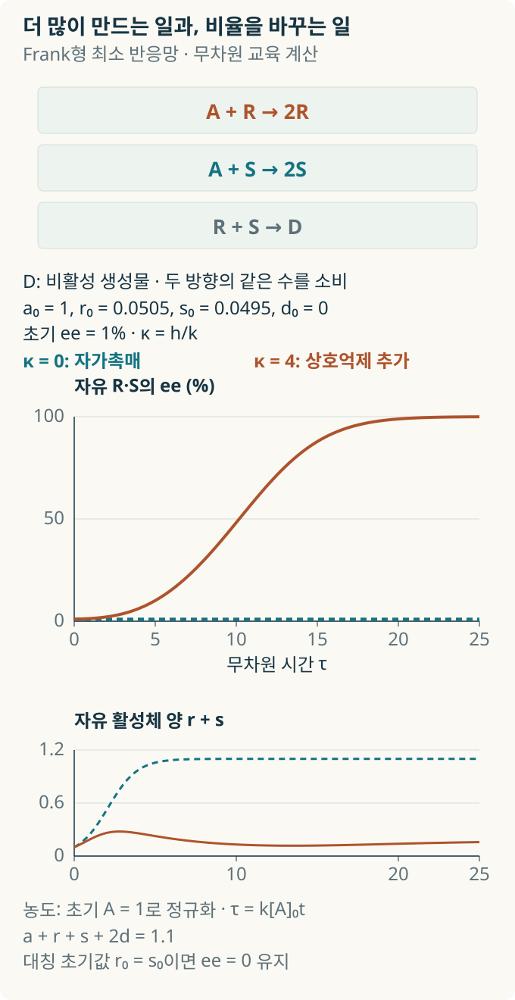
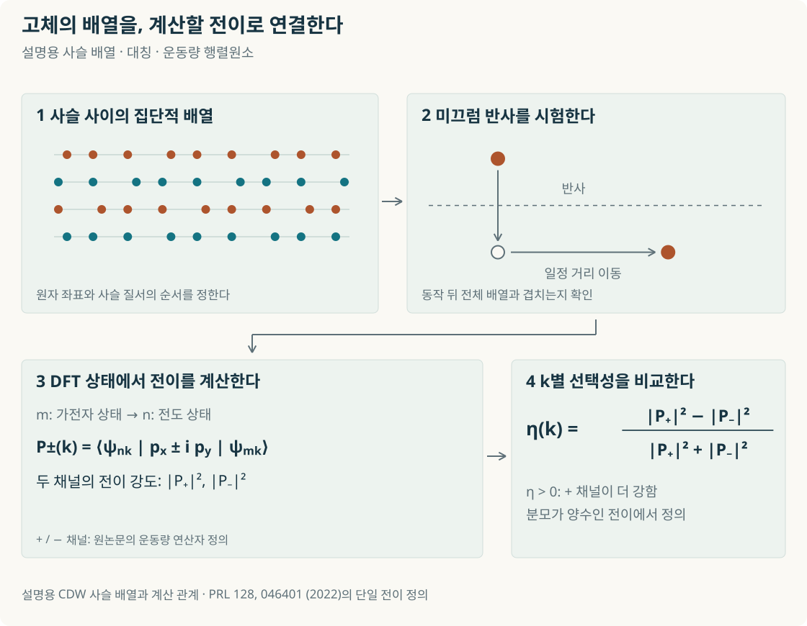
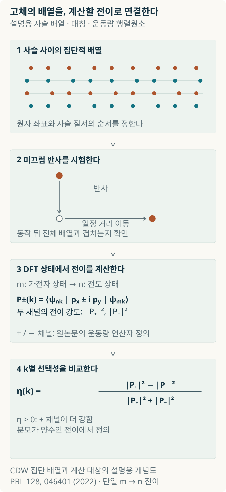

거울상 분자의 작은 불균형을 키우는 화학
2026년 노벨 화학상의 비선형 효과와 비대칭 자가촉매에서, 카이랄 전하밀도파의 원편광 응답까지

내용 살펴보기
왼손 장갑을 오른손에 끼워 보면, 닮았다는 것과 같다는 것의 차이를 금세 느낀다. 분자에도 이런 차이가 있다. 같은 원자들이 같은 순서로 연결돼 있어도 공간에서 놓인 모양이 서로 거울상이고, 돌려서 포갤 수 없는 두 형태가 존재한다. 우리 몸의 단백질처럼 이미 손잡이성을 가진 상대를 만나면 두 분자는 서로 다르게 결합하고 반응할 수 있다.
그런 분자를 실험실에서 원하는 방향으로 만들려면 어떻게 해야 할까. 한쪽을 구별하는 요소가 없는 반응물과 환경에서는 두 거울상으로 향하는 대칭적인 경로가 같은 확률을 갖는다. 처음에 아주 조금 더 많던 쪽이, 반응을 거치며 압도적으로 많아질 수 있다면 이야기가 달라진다. 2026년 노벨 화학상은 비대칭 유기합성의 비선형 효과와 자가촉매 작용을 발견한 앙리 B. 카강과 소아이 겐소에게 돌아갔다. 작은 조성 차이를 크게 키우는 화학이 상의 중심에 놓였다. [1]
이 발견은 생명체에서 특정 손잡이성이 선택되는 과정에 실험적 질문을 던졌고, 촉매를 설계하는 방법도 바꾸었다. 여기에는 계산 응집물리 연구자에게도 익숙한 문제가 있다. 미시적인 대칭의 차이는 어떤 상호작용을 거쳐 큰 효과로 드러나는가. 화학 반응에서 이 질문을 따라간 뒤, 원자 사슬이 이루는 질서를 빛으로 읽는 고체의 문제까지 가 보자.
거울상의 모양과 섞인 비율
물체가 자기 거울상과 포개지지 않는 기하학적 성질을 카이랄리티(chirality)라 한다. 분자에서 이런 거울상 쌍을 거울상 이성질체(enantiomers)라고 부른다. 한 원자 주위에 서로 다른 네 치환기가 놓이는 구조가 익숙한 예이고, 분자 전체가 축이나 나선을 이루는 방식에서도 카이랄리티가 생긴다. [2]
화학에서 쓰는 R과 S는 정해진 우선순위 규칙으로 입체배치를 지정하는 이름이다. 편광면을 어느 방향으로 돌리는지는 정해진 파장과 조건에서 측정하는 광회전의 부호, (+)와 (−)로 나타낸다. 따라서 분자의 배치를 지정하는 일과 빛에 대한 응답을 구하는 일에는 각각의 정보가 필요하다. 이 구분은 뒤에서 고체의 원편광 응답을 살필 때도 유용하다. [2]
증폭을 이해하려면 먼저 섞인 비율을 정확하게 읽어야 한다. R형과 S형의 양을 각각 nR, nS라고 하면, 거울상 이성질체 과잉도(enantiomeric excess, ee)의 크기는 다음과 같다. [2]

두 형태가 50:50으로 섞인 라세미체의 ee는 0%다. 75:25라면 차이가 50이므로 ee는 50%, 97.5:2.5라면 ee는 95%다. 이 값의 분모는 해당 화합물의 두 거울상을 합친 양이다. 촉매를 얼마나 넣었는지, 반응물 가운데 얼마가 생성물로 바뀌었는지는 별도로 측정한다. 리간드의 ee와 생성물의 ee를 비교할 때에도 서로 다른 화합물 집단의 조성을 대조한다.
카강의 곡선에서 촉매의 조립을 읽다
촉매가 반응물을 잡는 공간에 손잡이성이 있으면 한쪽 거울상으로 가는 경로를 더 유리하게 만들 수 있다. 금속에 결합하는 카이랄 리간드는 그런 공간을 만드는 중요한 부품이다. 그러면 리간드를 두 거울상으로 섞었을 때, 리간드의 ee와 생성물의 ee 사이에는 어떤 관계가 생길까.
각 리간드가 서로 독립적으로 같은 세기의 선택성을 전달한다면, 두 ee 사이에는 비례관계를 기대할 수 있다. 1986년 카강과 동료들은 비대칭 산화와 알돌화 반응에서 이 관계가 휘어지는 비선형 효과를 보고했다. 양의 비선형 효과에서는 같은 리간드 ee에서 생성물의 ee가 이 비례관계의 예상보다 커진다. 음의 효과에서는 그 예상보다 작아진다. 곡선은 반응 속에서 촉매들이 어떻게 함께 작동하는지 묻게 한다. [3]
간단한 조합 모형으로 증폭의 한 원리를 살펴보자. R형 리간드가 75%, S형이 25%이고, 두 리간드가 무작위로 한 쌍의 복합체를 만든다고 가정한다. RR은 56.25%, RS와 SR을 합친 이형 조합은 37.5%, SS는 6.25%다. 여기서 이형 복합체가 거의 반응하지 않고, RR과 SS가 같은 속도로 일한다면 활성 복합체는 전체의 62.5%다. 그 활성 집단 안에서 RR:SS는 90:10이 된다. 원래 리간드의 ee 50%가 활성 집단에서는 80%로 커진 셈이다.
이때 비율을 바꾸는 것은 조립 방식과 조합별 반응성이다. 두 형태가 섞인 비활성 조합으로 같은 수씩 들어가면, 남아 일하는 쪽의 상대적인 차이가 더 커진다. RR과 SS가 각각 반대 거울상의 생성물을 완전히 선택하는 이상적 경우에는 활성 집단의 비율이 생성물에도 전달된다. 실제 생성물의 ee를 예측하려면 각 촉매의 선택성과 전환 속도, 조립 평형을 함께 알아야 한다.


실험에서 이런 증폭은 얼마나 클 수 있을까. 1989년 기타무라·오카다·스가·노요리의 연구는 벤즈알데하이드에 다이에틸아연을 첨가하면서 카이랄 아미노알코올 DAIB를 8 mol% 사용했다. DAIB의 ee가 15%일 때, 가수분해 뒤 얻은 (S)-1-페닐-1-프로판올의 ee는 95%였다. 리간드가 57.5:42.5인 혼합물로도 생성물은 97.5:2.5로 치우친 것이다. 같은 반응의 속도·구조·분광 자료는 동형과 이형 아연 복합체의 안정성과 반응성이 다르다는 설명을 뒷받침했다. [4]
만들어진 분자가 다음 생성을 돕는다면
앞의 사례에서는 바깥에서 넣은 카이랄 성분이 생성물을 선택했다. 생성물에서 유래한 촉매가 같은 생성물을 더 만들도록 도우면, 반응은 자기 결과를 다시 입력으로 받는다. 이것이 자가촉매(autocatalysis)다. 한쪽 거울상의 생성물이 같은 쪽 생성을 더 잘 돕는 비대칭 자가촉매에서는 작은 초기 차이가 계속 다음 반응에 영향을 줄 수 있다.
1953년 물리학자 프레더릭 찰스 프랭크는 서로 대칭인 자기증식 경로들이 경쟁하는 속도 방정식을 통해 이 문제를 다뤘다. 한쪽의 증가가 자신을 돕는 과정과 두 방향이 서로를 억제하는 과정이 결합하면, 거의 같던 조성이 불안정해질 수 있다는 구상이다. [5]
그림 2의 Frank형 교육 모형에서는 원료 A로부터 R과 S가 각각 자기 생성을 돕고, R과 S가 만나면 비활성종 D를 만든다. 두 자가촉매 경로의 속도 상수가 같고 상호억제가 없으면 양쪽의 양은 늘어도 시작의 비율은 유지된다. 상호억제를 더하면 두 쪽에서 같은 수가 빠져나가는 효과가 생겨, 조금 많던 쪽의 상대적 우세가 커질 수 있다. 완전히 같은 초기값을 넣은 결정론적 방정식은 대칭을 유지하므로, 그림에서는 R이 조금 더 많은 초기조건을 지정했다.


1995년 소아이·시바타·모리오카·초지는 피리미딜 알칸올 계에서 비대칭 자가촉매와 ee의 증폭을 함께 보고했다. 알코올에서 유래한 유기아연 촉매가 피리미딘 알데하이드에 다이아이소프로필아연이 첨가되는 반응을 돕고, 같은 알코올이 더 생긴다. 처음 넣은 알코올의 작은 치우침이 다음 생성물의 더 큰 치우침으로 이어지는 실험적 고리가 마련됐다. [6]
거의 반반인 출발점을 어떻게 준비하고 확인할까
2003년 사토·우라베·이시구로·시바타·소아이는 증폭의 출발점을 극도로 작게 낮췄다. 2-알카이닐-5-피리미딜 알칸올 계에서 약 0.00005%의 초기 ee가 연속한 세 반응 주기 뒤 99.5%를 넘었다. 조성으로 옮기면 처음은 50.000025:49.999975, 마지막에는 많은 쪽이 99.75%를 넘는다. 두 거울상 사이의 차이가 얼마나 작아도 반응이 그것을 키울 수 있는지 보여 준 결과다. [7]
여기서 흥미로운 것은 큰 최종값만큼이나 작은 초깃값을 다루는 방법이다. 이 정도 ee는 통상적인 키랄 HPLC나 편광 측정으로 바로 분간하기 어렵다. 연구진은 ee가 높은 알코올의 표준액을 라세미 알코올에 정량적으로 섞어 미세한 초기 편향을 준비했다. 반대 방향의 초기 촉매와 대응하는 생성물도 대조해, 넣은 치우침의 방향과 증폭된 결과가 연결되는지 살폈다. 작은 수치를 주장하는 일에는 그 수치를 만드는 조제법과 대조 실험이 함께 들어간다. [7]
생명체의 균일한 손잡이성에 관한 질문도 이 지점에서 구체화된다. 리보솜이 단백질을 조립할 때 카이랄 아미노산의 L형을 선택하는 체계가 있다면, 그 이전의 화학에서는 어떤 작은 편향이 어떻게 살아남고 증폭됐을까. Soai 반응은 유기아연과 특정 알데하이드를 사용하는 실험계에서 그 증폭을 구현했다. 이 원리를 초기 지구의 화학으로 옮기려면, 당시 공급될 수 있던 원료와 물·온도·혼합 조건 속에서 자기촉진과 경쟁을 함께 유지하는 반응망을 찾아야 한다. [5–7]
반응을 움직이는 분자 집단을 찾아서
자가촉매를 화살표 하나로 그리면 생성물 R이 다른 R을 곧장 복제하는 듯 보이지만, 실제 Soai 계에서는 아연을 포함한 여러 분자들이 모였다 흩어지며 반응한다. 어느 응집체가 기질을 잡고, 어떤 중간체를 거쳐 새로운 결합을 만드는지 알아야 증폭을 다른 분자에 설계할 수 있다.
2020년 아타발레·시몬·하우크·덴마크는 구조·속도·DFT 계산을 묶어 피리딜 계의 자가촉매를 연구했다. 이들은 같은 손잡이성의 성분들로 이루어진 네 단위 응집체가 기질을 두 지점에서 잡는 모형으로 촉진 작용을 설명했다. 다른 손잡이성이 섞인 응집체와의 구조·반응성 차이는 편향이 커지는 이유에도 연결됐다. [8]
2025년 묄러와 동료들은 네 종류의 피리딜·피리미딜 기질을 대상으로 반응 중 고분해능 질량분석과 속도 측정, 반응망 시뮬레이션을 수행했다. 이들은 알코올레이트와 알데하이드에서 생기는 짧은 수명의 아연 헤미아세탈레이트를 핵심 중간체로 제시했다. 구조가 안정하게 관측되는 것과 실제 전환을 빠르게 만드는 것은 서로 다른 질문이다. 기질·농도·반응 진행에 따라 어떤 종이 나타나고 속도와 연결되는지 추적해야 두 설명의 적용 범위를 비교할 수 있다. [9]
카강의 곡선도 이런 조사에서 좋은 출발점이다. 곡선이 휘는 원인을 읽으려면 촉매 농도와 반응 진행 정도, 생성물 ee를 함께 측정해야 한다. 칼레크와 푸는 다른 종류의 비대칭 반응에서 반응 진행에 따른 동역학만으로도 음의 비선형 효과가 나타나는 사례를 연구했다. 따라서 곡선의 모양을 분자 구조와 연결하는 작업에는 속도와 구조를 따로 살피는 실험이 필요하다. 데이터의 곡선에서 출발해 실제로 일을 하는 분자 집단을 찾아가는 과정이다. [10]
계산과 기계학습이 촉매를 고르는 방법
계산화학자는 한쪽 거울상으로 가는 전이상태와 반대쪽으로 가는 전이상태를 찾아 에너지를 비교한다. 이때 전이상태는 새로운 결합이 만들어지고 기존 결합이 바뀌는 반응 경로의 고비다. 작은 활성화 자유에너지 차이가 생성물 비율에 크게 작용하므로, 촉매가 어떤 구조로 기질을 붙잡는지와 가능한 배치들을 어떻게 표본화하는지가 중요하다.
갈라라티·부치·도일·시그먼의 2026년 연구는 이런 반응 기작의 정보를 통계적 예측에 담았다. 니켈 촉매 C(sp³) 결합 반응에서, 비교적 계산비용이 낮은 방법으로 전이상태와 중간체의 구조 집단을 만들고 입체·전자적 특징을 추출했다. 이 특징으로 학습한 다변량 선형회귀 모형은 일부 알려진 조합의 데이터를 이용해 새로운 리간드나 반응 상대를 예측하고, 선택성이 낮았던 사례의 개선 후보를 찾았다. 기계학습이 이용할 정보의 단위를 자유 리간드에서 실제 촉매–기질 상호작용에 가까운 구조로 바꾼 것이다. [11]
이 접근에서 전문가는 어떤 단계가 거울상을 가르는지 가설을 세우고, 그 가설을 반영한 구조와 데이터를 고른다. 새로운 기질에서 결정 단계가 바뀌는지를 시험하고, 예측한 리간드를 실제 반응으로 확인하는 과정이 이어진다. 작은 데이터로 무엇을 일반화할지 정하는 일과 분자의 작동 원리를 알아내는 일이 함께 진행된다. Soai 계의 활성종을 추적하는 문제와도 이 대목에서 연결된다.
고체의 손잡이성을 빛으로 읽는 계산
분자의 손잡이성을 만드는 문제는 원자와 전자들이 함께 이루는 질서를 고르는 문제로 이어질 수 있다. 필자가 연구해 온 계산 응집물리에서는 실리콘 Si(111) 표면 위 인듐 원자 사슬이 한 예다. 이 사슬에서 생기는 전하밀도파(charge-density wave, CDW)는 전자밀도와 원자 변위가 주기적으로 질서를 이루는 상태다. 여러 사슬의 질서가 옆으로 어떤 순서로 배열되는가에 따라 오른쪽·왼쪽·비카이랄 적층이 구별된다. 2020년 공동연구는 STM 관찰과 대칭 분석, DFT 계산으로 이 배열을 살폈다. [12]
필자가 공동 교신저자로 참여한 2022년 연구에서는 이렇게 생긴 배열의 광학 전이를 계산했다. 원편광은 한 공간점에서 시간이 흐를 때 전기장의 방향이 빛의 진행 방향에 수직인 평면 안에서 회전하는 편광이다. 두 회전 방향의 빛이 전자 전이를 일으키는 세기를 비교하면 전자의 운동량 k에 따라 어느 편광이 더 잘 결합하는지 알 수 있다. 연구진은 DFT 파동함수와 전이 행렬원소에서 이 선택성을 구하고, 적층에 남는 미끄럼 반사(glide mirror) 대칭과 연결했다. 반사한 뒤 일정 거리 옮겼을 때 원래 배열과 같아지는지가 전이 응답에 영향을 준 것이다. [13]


이 연구에 쓰인 VASPBERRY는 VASP가 계산한 파동함수의 기하와 광학 전이를 분석하는 공개 코드다. 필자가 주 개발과 유지관리를 맡았고, Sun-Woo Kim이 원편광 이색성 계산 기능에 기여했다. 같은 전이 행렬원소는 에너지 차이의 제곱을 분모로 둔 가중합을 통해 Berry 곡률과도 연결된다. 구조를 먼저 보고 광학적 성질을 추정하는 데서 더 나아가, 파동함수와 전이 규칙을 계산해 어떤 운동량에서 손잡이성의 차이가 드러나는지 조사할 수 있다. [13, 14]
연구진은 원편광을 쬐며 냉각해 특정 카이랄 적층의 큰 단일 도메인을 선택하는 실험도 제안했다. 이 방향에서는 빛이 두 배열에 전달하는 에너지와 전이 확률, 도메인 경계의 움직임과 안정성을 함께 확인해야 한다. 화학에서 한쪽 거울상의 생성 비율을 키웠다면, 고체에서는 원하는 손잡이성을 가진 집단적 질서를 만들고 유지하는 조건을 찾는 것이다. 분자를 만드는 촉매와 고체를 읽고 제어하는 빛 사이에서, 대칭의 작은 차이를 어떤 상호작용으로 선택할 것인가라는 질문이 구체적인 계산과 실험으로 이어진다. [13]
참고문헌
- [1]The Royal Swedish Academy of Sciences, The Nobel Prize in Chemistry 2026: They made chemistry choose a mirror image (2026), https://www.kva.se/en/news/the-nobel-prize-in-chemistry-2026/ (accessed 2 November 2026).
- [2]G. P. Moss, Basic terminology of stereochemistry (IUPAC Recommendations 1996), Pure Appl. Chem. 68, 2193 (1996), doi:10.1351/pac199668122193.
- [3]C. Puchot, O. Samuel, E. Dunach, S. Zhao, C. Agami, and H. B. Kagan, Nonlinear effects in asymmetric synthesis. Examples in asymmetric oxidations and aldolization reactions, J. Am. Chem. Soc. 108, 2353 (1986), doi:10.1021/ja00269a036.
- [4]M. Kitamura, S. Okada, S. Suga, and R. Noyori, Enantioselective addition of dialkylzincs to aldehydes promoted by chiral amino alcohols. Mechanism and nonlinear effect, J. Am. Chem. Soc. 111, 4028 (1989), doi:10.1021/ja00193a040.
- [5]F. C. Frank, On spontaneous asymmetric synthesis, Biochim. Biophys. Acta 11, 459 (1953), doi:10.1016/0006-3002(53)90082-1.
- [6]K. Soai, T. Shibata, H. Morioka, and K. Choji, Asymmetric autocatalysis and amplification of enantiomeric excess of a chiral molecule, Nature 378, 767 (1995), doi:10.1038/378767a0.
- [7]I. Sato, H. Urabe, S. Ishiguro, T. Shibata, and K. Soai, Amplification of chirality from extremely low to greater than 99.5% ee by asymmetric autocatalysis, Angew. Chem. Int. Ed. 42, 315 (2003), doi:10.1002/anie.200390105.
- [8]S. V. Athavale, A. Simon, K. N. Houk, and S. E. Denmark, Demystifying the asymmetry-amplifying, autocatalytic behaviour of the Soai reaction through structural, mechanistic and computational studies, Nat. Chem. 12, 412 (2020), doi:10.1038/s41557-020-0421-8.
- [9]P. Möhler, G. Betzenbichler, L. Huber, A. F. Siegle, and O. Trapp, Mechanistic analysis and kinetic profiling of Soai’s asymmetric autocatalysis for pyridyl and pyrimidyl substrates, Nat. Commun. 16, 7303 (2025), doi:10.1038/s41467-025-62591-3.
- [10]M. Kalek and G. C. Fu, Caution in the use of nonlinear effects as a mechanistic tool for catalytic enantioconvergent reactions: Intrinsic negative nonlinear effects in the absence of higher-order species, J. Am. Chem. Soc. 139, 4225 (2017), doi:10.1021/jacs.7b01826.
- [11]S. Gallarati, E. M. Bucci, A. G. Doyle, and M. S. Sigman, Transferable enantioselectivity models from sparse data, Nature 651, 637 (2026), doi:10.1038/s41586-026-10239-7.
- [12]S.-W. Kim, H.-J. Kim, S. Cheon, and T.-H. Kim, Two-dimensional chiral stacking orders in quasi-one-dimensional charge density waves, Phys. Rev. B 102, 121408(R) (2020), doi:10.1103/PhysRevB.102.121408.
- [13]S.-W. Kim, H.-J. Kim, S. Cheon, and T.-H. Kim, Circular dichroism of emergent chiral stacking orders in quasi-one-dimensional charge density waves, Phys. Rev. Lett. 128, 046401 (2022), doi:10.1103/PhysRevLett.128.046401.
- [14]H.-J. Kim, VASPBERRY, version 1.6.6 (2026), commit 60efa4cf1eaca1e9d34450ce527017f57973569d (accessed 2 November 2026).